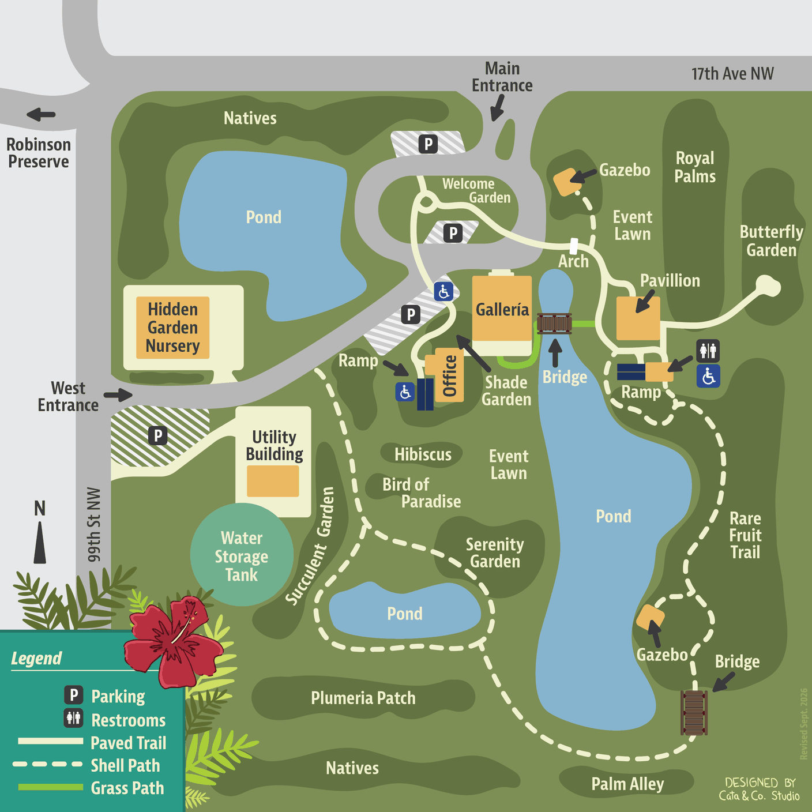

On the shore of Palma Sola Bay — ten acres of gardens, a pond full of birds, and a community that has kept it free and open since 1993.
Three big days this season — and something most weeks in between.
Ten acres, and six places worth walking to.
You don't need a reservation, a tour or any botanical knowledge. Walk the paths at your own pace. The park closes occasionally for private events — worth checking the calendar before a weekend visit.
Directions, accessibility and more about each place →
What's blooming, what's fruiting, what's flying — and what somebody just planted. Turn any card over for a few things worth knowing about it.
Browse the collection →See something interesting? Photograph it and add the observation to the park's iNaturalist project. Your photograph — with your name and licence on it — may end up on a sign in the garden, on this website, or on the screen in the Galleria.
How to get started →Palma Sola Botanical Park exists because local people decided a former county nursery was worth saving. It has run as a non-profit since 1993 with no federal, state or local government subsidy — volunteers do nearly everything else.
Recently: featured in Horticulture Magazine and on Bay News 9.
About the park →9800 17th Ave NW, Bradenton, Florida
Open 8am – dusk · Every day · Free